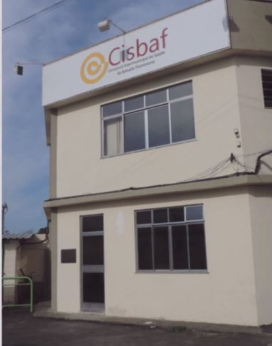

Junho de 2012 - Definição da sede
Em dezembro do mesmo ano, os Municípios começam a se estruturar adquirindo equipamentos necessários
para implementação e começam também a definir o melhor local para implantação da sede física do
Núcleo Telessaúde Brasil Redes da Região Metropolitana I - Baixada Fluminense
Levando em conta a já existência, desde fevereiro de 2000, do Cisbaf - Consórcio Intermunicipal de
Saúde Baixada Fluminense, sendo um poderoso instrumento de gestão da saúde em toda baixada
fluminense, fica estabelecido, através das Deliberações CIR n. 46/20212 e 29/2012, como sede física
do Núcleo Regional.
Como parceria na implantação do Projeto, contamos com a Universidade do Estado do Rio de Janeiro -
UERJ, que já a mesma já possuía atividades em telemedicina, tele-educação e teleassistência em
saúde, seguindo os avanços propostos pelo Ministério da Saúde.
Após operação, constata-se que o retorno sobre o investimento no estabelecimento do Núcleo de
Telessaúde na região é extremamente significativo, trazendo diversas melhorias na resolubilidade da
assistência prestada à população, entre eles estão:
- Redução de encaminhamentos desnecessários devido intervenção por consulta;
- Melhoria da qualidade assistencial;
- Redução dos custos da atenção à saúde;
- Observatório das necessidades e demandas da região.
Abrangência de atendimento a 11 municípios: Belford Roxo, Duque de Caxias, Itaguaí, Japeri, Magé,
Mesquita, Nilópolis, Nova Iguaçu, Queimados, São João de Meriti e Seropédica, que totalizam
3.810.106 habitantes (IBGE - Estimativa Populacional 2021).